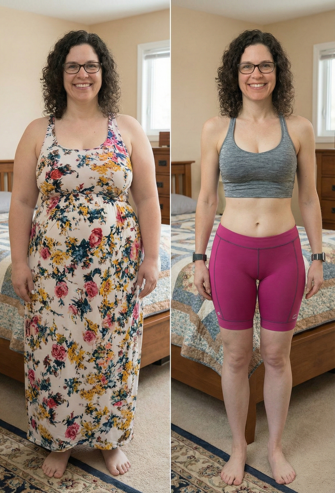

Jahrelang habe ich gelitten – bis ich dieses "Warmwasser-Ritual" entdeckte, das meinen Stoffwechsel explodieren ließ
Ich war gefangen in einem Körper, den ich nicht mehr mochte... Dann fand ich das hier.
Ich erinnere mich noch genau an den Moment, als ich wusste: Es muss sich etwas ändern.
Es war an einem Sommernachmittag. Ich machte mich fertig, um mit meinen Enkelkindern ins Schwimmbad zu gehen.
Ich warf einen Blick auf meinen Badeanzug und dann in den Spiegel. Mir wurde einfach nur übel.

Ich kam da nicht mehr raus.
Also zog ich ein riesiges Schlabber-Shirt an, erzählte den Kleinen, ich sei heute einfach zu müde, und wir würden an einem anderen Tag gehen.
Traurigerweise kam dieser Tag nie.
Ich mied nicht nur Badeanzüge – ich mied das Leben.
Ich habe immer alle anderen an erste Stelle gesetzt: meine Familie, meinen Job. Mich selbst zu pflegen, kam immer erst ganz zum Schluss.
Ich war immer diese "Am Montag fange ich an"-Person. Und diesmal, komme was wolle, wollte ich es durchziehen.
Ich habe jeden neuen Trend ausprobiert

Keto, Kalorienzählen, Vorkochen.
Jedes Mal dachte ich: Das ist es. Das ist das Ding, das für mich funktioniert.
Jedes Mal fing ich super an, verlor ein paar Pfund – und dann kam das Leben dazwischen.
Ich bekam Stress, oder ich erreichte ein Plateau, und zack – war ich wieder genau dort, wo ich angefangen hatte.
Und manchmal nahm ich sogar noch mehr zu.
In was für einem elenden Teufelskreis ich steckte: Diät halten und hungern oder Fressanfälle und Schuldgefühle.
Es gab nur das eine oder das andere.
Ich dachte, es sei meine Schuld. Ich dachte, ich habe einfach keine Willenskraft. Mein Stoffwechsel war eingeschlafen.
Vielleicht war es mein Schicksal, für den Rest meines Lebens übergewichtig zu sein.
Ich war einfach nur müde.
Müde davon, mich auf Fotos zu verstecken.
Müde davon, mich auf Familienfeiern unwohl zu fühlen.
Müde davon, keine Kleidung zu finden, die richtig sitzt.
Müde davon, mich zu verhüllen, während andere Frauen trugen, was sie wollten.
Müde von dem Druck, auf eine bestimmte Weise auszusehen und mich trotzdem gut fühlen zu müssen.
Die Leute bemerkten es, wenn ich abnahm. Sie sagten: "Wow, du siehst toll aus!"
Und dann nahm ich alles wieder zu. Ich konnte spüren, wie sie mich ansahen.
Es war peinlich. Ich wollte das Gewicht verlieren – und es für immer loswerden.
Ich wollte so sehr mögen, was ich im Spiegel sah.
Ich wollte mich so sehr leichter und glücklicher fühlen – für immer.
Dann passierte es: Ich fand etwas, das funktionierte

Da ich alle modischen Diäten durchhatte, suchte ich eigentlich nicht nach etwas Neuem.
Das Thema war für mich durch. Ich hatte es satt zu scheitern.
Dann hörte ich vom "Warmwasser-Trick" und dachte mir: Hä, ernsthaft?
Ich dachte, es sei viel zu simpel. Aber es soll eine versteckte Reaktion im Körper auslösen, die das Fett quasi "wegschmelzen" lässt. Das war der Moment, in dem sich alles änderte.
Keine Diät. Kein Trainingsplan. Keine weitere "Wunderpille".
So einfach, dass ich es fast ignoriert hätte.
Jeden Tag bemerkte ich eine Veränderung.
Kein Heißhunger, keine nächtlichen Snacks, kein Frustessen.
Mein Körper fühlte sich an, als würde er von innen gereinigt und als wäre mein Stoffwechsel endlich aufgewacht.
Ich verlor Gewicht. Ohne zu hungern, ohne Schuldgefühle.
Und weißt du was? Es war einfach.
Ich befolge keine verrückten Regeln.
Ich zähle keine Kalorien.
Ich mache keine erschöpfenden Workouts.
Ich stecke nicht in einem Zyklus aus Verzicht und Versagen fest.
Kein ständiges Wiegen, kein ständiges Nachdenken über Essen.
Mein Körper fühlt sich 10 Jahre jünger an. Ich fühle mich leichter, glücklicher und voller Energie.
Ich liebe die Kleidung, die ich trage, und ich verstecke meinen Körper nicht mehr.
Ich mache mir keine Sorgen um Essen oder mein Aussehen.
Zum ersten Mal in meinem Leben habe ich die Kontrolle.
Keine langen Stunden im Fitnessstudio oder Verzicht auf meine Lieblingsspeisen.
Diäten bestimmen mein Leben nicht mehr.
Ich bin nicht erschöpft, überfordert oder schäme mich.
Ich kenne jetzt die Wahrheit: Diäten sind nicht nur für Leute mit Disziplin oder guten Genen.
Es lag nicht an mir – die Diäten waren das Problem.
Es war zu schön, um wahr zu sein...
Zuerst glaubte ich es nicht. Wie konnte etwas so Einfaches funktionieren?
Am Ende der ersten Woche...
- Fast kein Heißhunger mehr.
- Ich fühle mich leichter, weniger aufgebläht und voller Energie.
- Zwei Kilo weg!
Und ich war nicht die Einzige, die es bemerkte.
Meine Schwester lachte. "Niemals funktioniert das", sagte sie. Und dann probierte sie es. Und es funktionierte auch bei ihr!
Sie nahm im ersten Monat 7 Kilo ab.
Meine beste Freundin, noch so eine Erfolgsgeschichte. "Was zur Hölle?!" Nach zwei Wochen passte sie in zwei Hosengrößen kleiner.
Da traf es mich wie ein Blitz: Das war nicht nur für mich. Jede Frau musste davon erfahren.
Es ist meine Realität, nicht nur ein Wunschtraum. Du hast wahrscheinlich jede Diät da draußen ausprobiert. Jetzt ist es anders.
Probier es nur einmal aus – du wirst innerhalb von Tagen wissen, ob es für dich funktioniert, genau wie bei mir.
Das Geheimnis hinter dem "Warmwasser-Ritual"
Was genau ist also dieser "Trick", der mein Leben verändert hat?
Es stellt sich heraus, mein Erfolg war keine Magie. Es war ein einfaches, wohltuendes Ritual mit einem speziellen Tee namens Lulutox.
Im Gegensatz zu Pillen, die mir auf den Magen schlugen, oder Shakes, die nach Kreide schmeckten, ist Lulutox eine köstliche Mischung aus uralten Superfoods, die man warm genießt und die mit deinem Körper arbeiten, nicht gegen ihn.
Es wirkt als das ultimative "Stoffwechsel-Elixier für die Wechseljahre" auf 3 kraftvolle Arten:
- 🔥 Stoffwechsel-Aktivierung: Zutaten wie Oolong und Matcha zünden die Kalorienverbrennung auf natürliche Weise.
- 🚽 Sanfte Entschlackung: Das warme Elixier spült sanft die "Altlasten" und Giftstoffe aus, die dich aufgebläht und schwer fühlen lassen.
- ⚡ Stoppt Heißhunger: Garcinia Cambogia hilft, dieses ständige "Ich habe Hunger"-Gefühl zu blockieren.
Echte Menschen, Echte Ergebnisse
⭐⭐⭐⭐⭐ "23 Kilo runter!"
"Absolut unglaublich! 23 Kilo in 3 Monaten. Ich hätte nie gedacht, dass Abnehmen so einfach sein könnte. Sehr zu empfehlen!"
— Sarah W.

⭐⭐⭐⭐⭐ "14 Kilo weg in 6 Wochen!"
"Ich passe endlich wieder in mein Hochzeitskleid! Dieses Produkt hat mein Leben komplett verändert!"
— Katharina B.

⭐⭐⭐⭐⭐ "Das Beste, was mir passieren konnte"
"Ich trinke es jeden Abend warm. Es schmeckt lecker nach Pfirsich und der Blähbauch ist sofort weg. Ich liebe es."
— Sabine K.
Gerade jetzt bietet Lulutox einen speziellen Rabatt für jeden an, der meine Geschichte liest.
Wenn du den Kampf leid bist, die Diäten satt hast und es leid bist, dich unsichtbar zu fühlen... drehe unten am Rad, um deinen exklusiven Rabatt zu gewinnen.